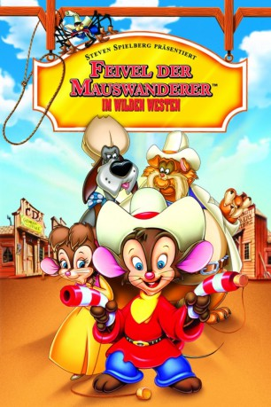
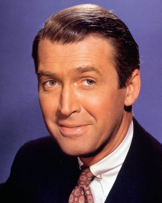
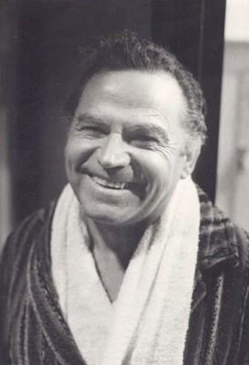
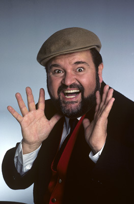
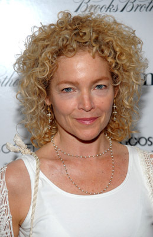
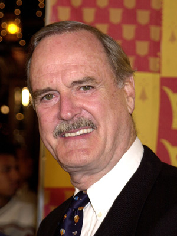

#1284 Feivel, der Mauswanderer 2 - im wilden Westen
Alternativ: An American Tail: Fievel Goes West
 
 IMDB-Wertung: 6.5 / 10
IMDB-Wertung: 6.5 / 10  Metascore: 0
Metascore: 0 
Zwei Jahre nach dem die russische Familie Mousekewitz in die USA gekommen ist, zieht es den kleinen Feivel in den Wilden Westen, wo er Sheriff werden möchte. Fortsetzung des berühmten Zeichentrickfilms über den Mauswanderer.
Jahr: 1991
Dauer: 75 Minuten
FSK: 6
Land: USA Studio: Universal PicturesTonspuren:
Untertitel:
Auflösung: SD (640x352) Größe: 699 MB
Genre: Animation/Trick, Abenteuer, Familie, Musical, Western
Regisseur: Phil Nibbelink, Simon Wells
Drehbuch: Flint Dille, Charles Swenson, David Kirschner
Soundtrack: James Horner
Darsteller:
- Phillip Glasser als Fievel
-  James Stewart als Wylie
- Cathy Cavadini als Tanya
-  Nehemiah Persoff als Papa
-  Dom DeLuise als Tiger
-  Amy Irving als Miss Kitty
-  John Cleese als Cat R. Waul
 Jon Lovitz als Chula
Jon Lovitz als Chula- Vanna Bonta als Additional Voices
 Sherry Lynn als Additional Voices
Sherry Lynn als Additional Voices- Lev Mailer als Additional Voices
- Erica Yohn als Mama
 Jack Angel als Frenchy - French Member of Cat R. Waul's Gang
Jack Angel als Frenchy - French Member of Cat R. Waul's Gang- Mickie McGowan als New York Mice / Country Mice
- Fausto Bara als Additional Voices
- Larry Moss als Additional Voices
- Nigel Pegram als Additional Voices
- Philip L. Clarke als Additional Voices
- Patrick Pinney als One-Eye - 1st Member of Cat R. Waul's Gang
 Jennifer Darling als Additional Voices
Jennifer Darling als Additional Voices- Lisa Raggio als Additional Voices
- Annie Holliday als Additional Voices
- Lawrence Steffan als Additional Voices
- David Tate als Additional Voices
- Robert Watts als Additional Voices
Datei: X:\Kinder Collections\Feivel, der Mauswanderer\Feivel, der Mauswanderer 2 - im wilden Westen (1991, FSK6, 640x352).avi seit 16.06.2015
Festplatte: Kinder-Filme+Trick
 Es gibt insgesamt 7 Filme in der Gruppe 'Kinder Collections\Feivel, der Mauswanderer'
Es gibt insgesamt 7 Filme in der Gruppe 'Kinder Collections\Feivel, der Mauswanderer'